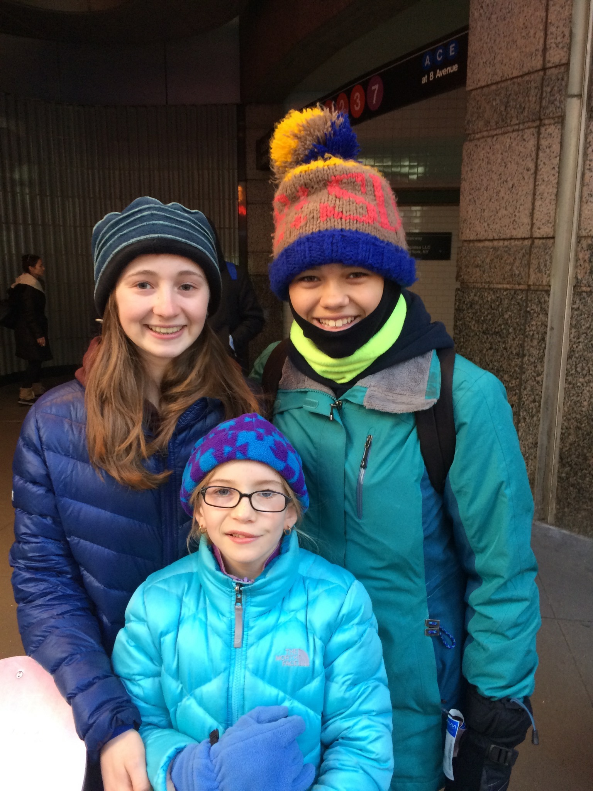
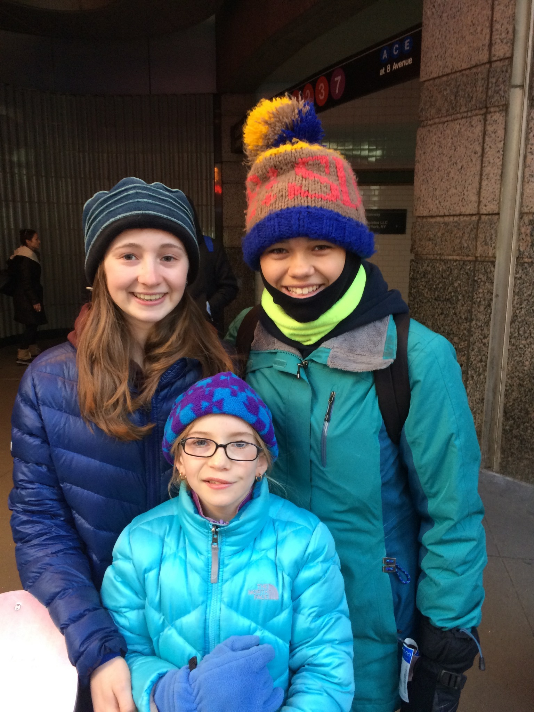

Lots of things can be said about Family. Good or bad they usally don't go anywhere. As expectations for families changes so do family dynamics. My family dynamic is individual to me because different family members have different families. For instance, my family doesn't just contain of my imediate family and my parents and their sibling and parents.It is so much larger. It is larger because my family isn't just by blood. In fact I have more family that I like and got to choose then by blood. If I go through my family and see who I consider a "mom" it would be over 10. Having one biological sister doesn't stop me from being a big sister to other kids but it also allows me to have sisters to look up to, sisters I get to annoy, sister to ask advice for.
 
